Mechanical Design
Two telescoping dropper-seatpost programs, each carried from first sketch to a fully detailed, manufacturable assembly. The work is the unglamorous core of mechanical design: load cases, tolerance stacks, and hundreds of detailed parts that all have to fit, seal, and survive.
The 34.9 Command Post was designed from concept to mass production. It started with a free-body diagram and a clear picture of the static and dynamic loads the post would see, then moved into part-by-part iteration aimed at minimizing mass while holding strength and stiffness targets. The program produced 96 designed parts and 109 pages of 2D documentation, and reached proof of concept in eight months.
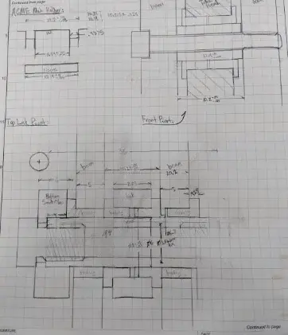
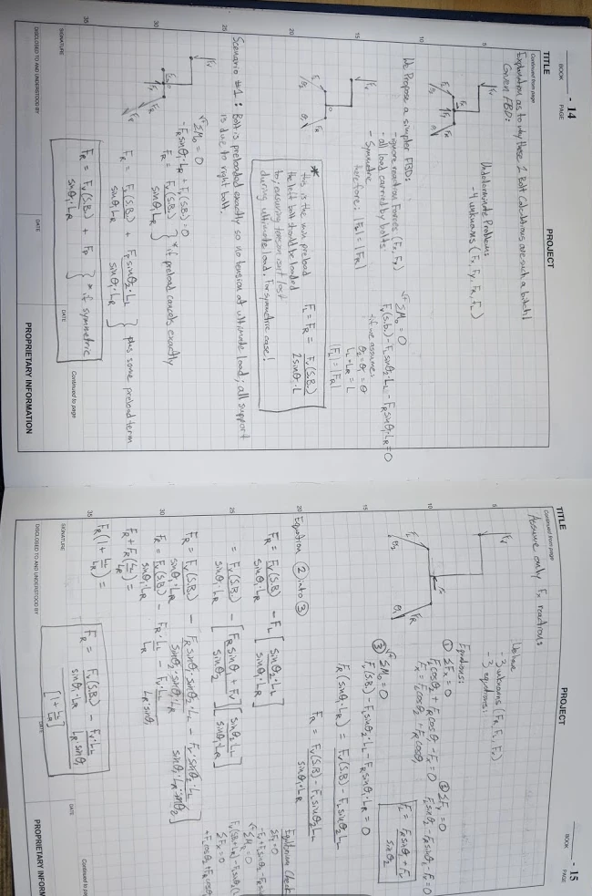
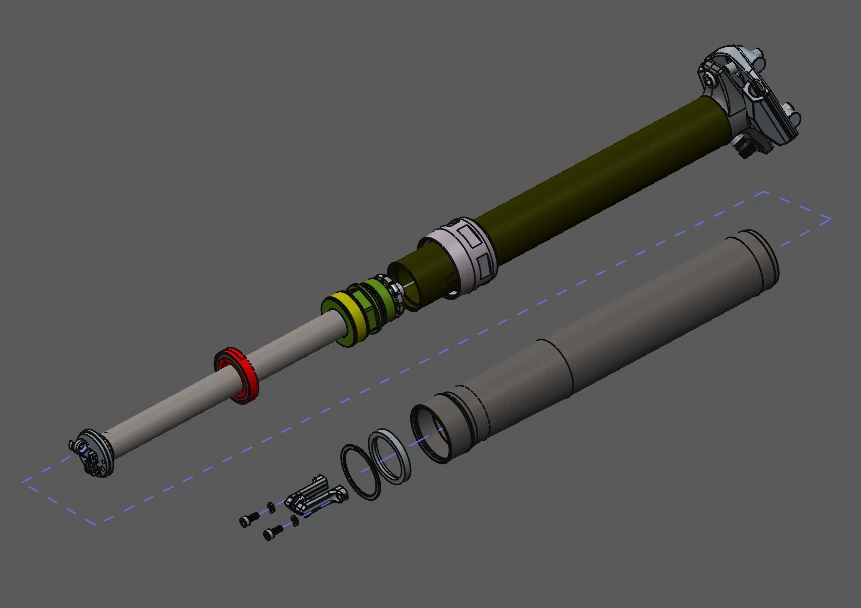
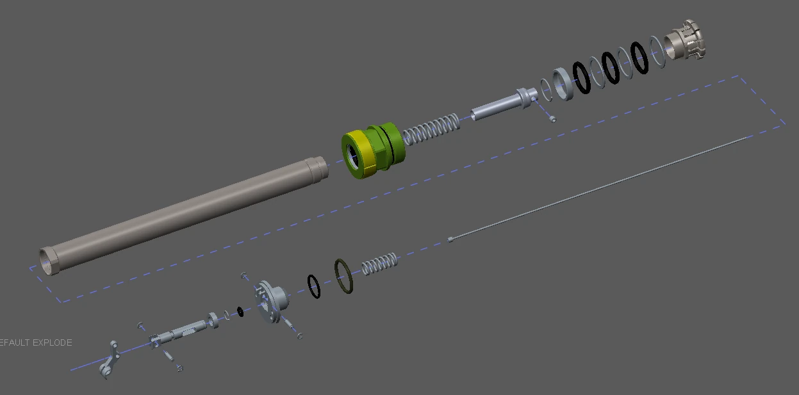
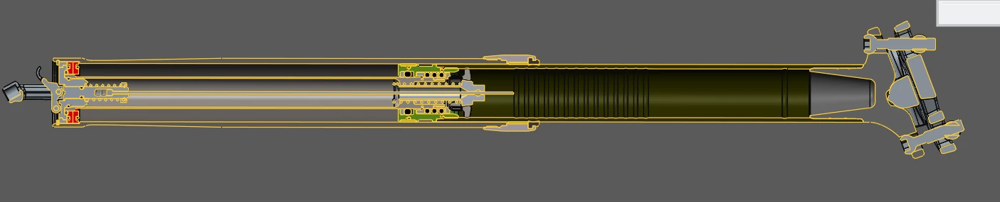
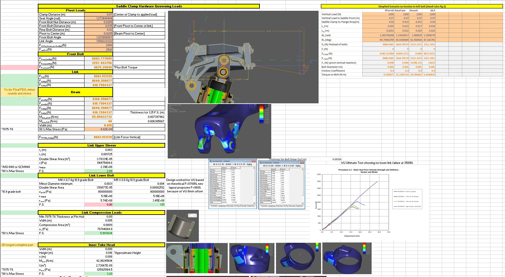
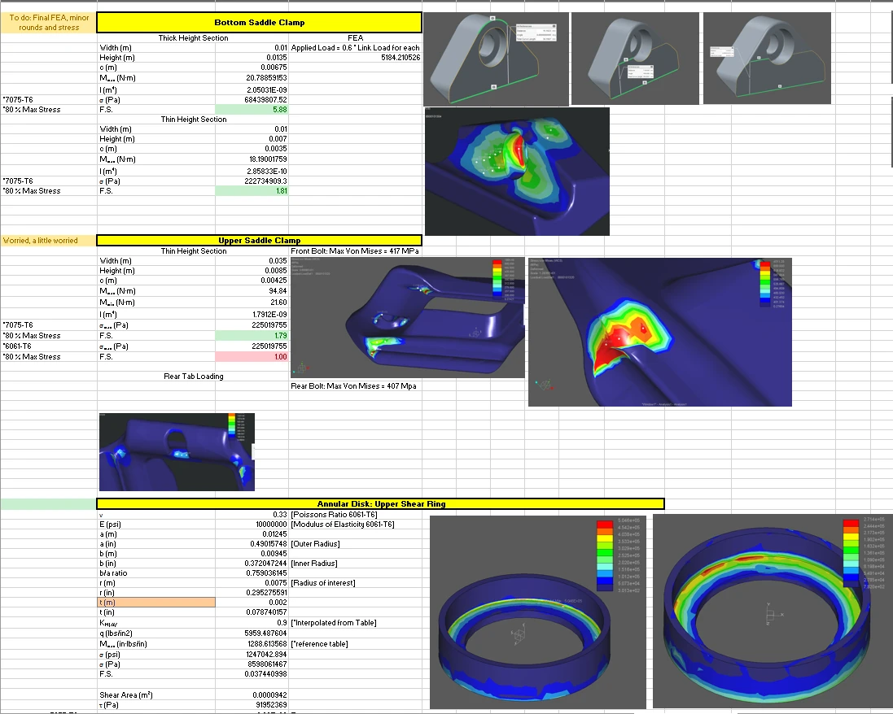
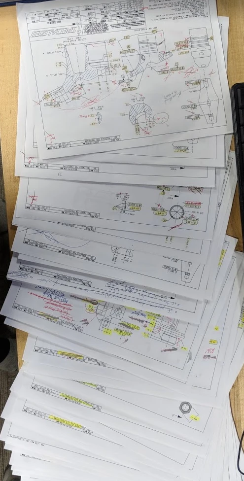
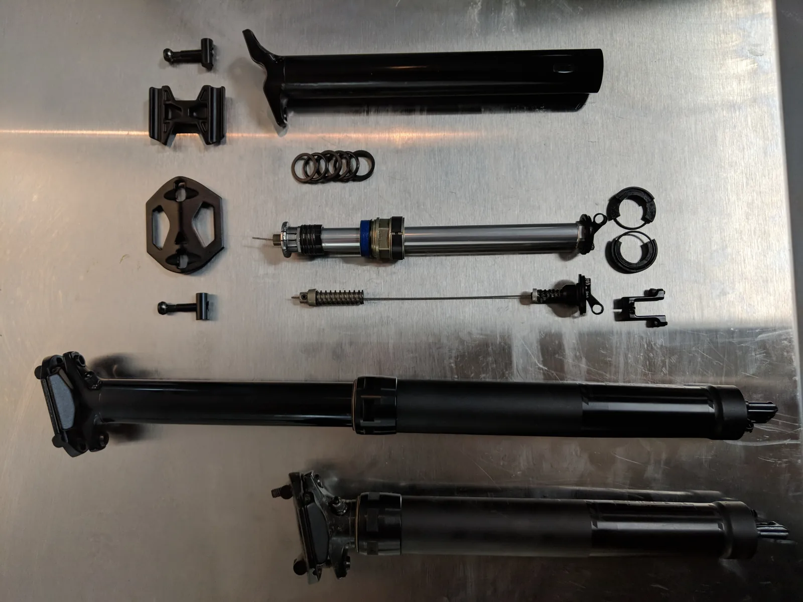
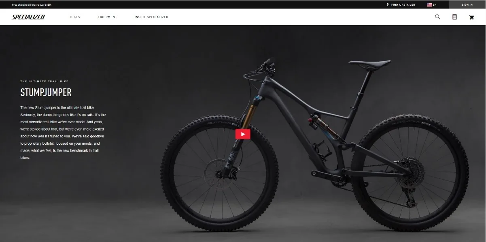
A second dropper-post design worked out in full internal detail. The cross-sections below show the sealing, bushing, and actuation stack-up through the length of the post — the geometry that determines how smoothly it travels and how well it holds position under load.
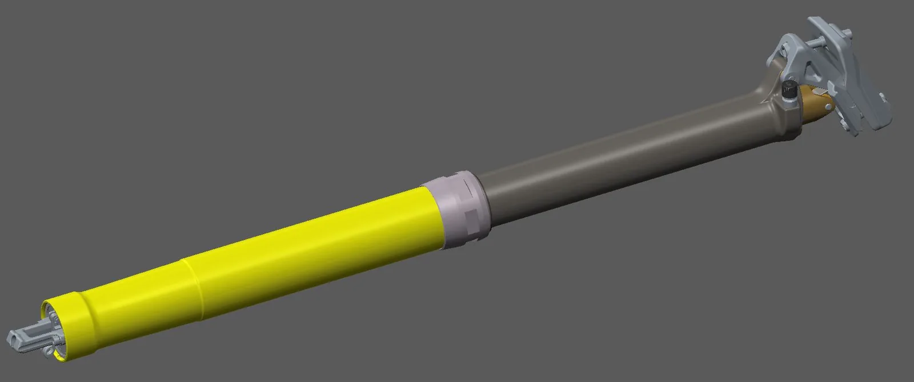
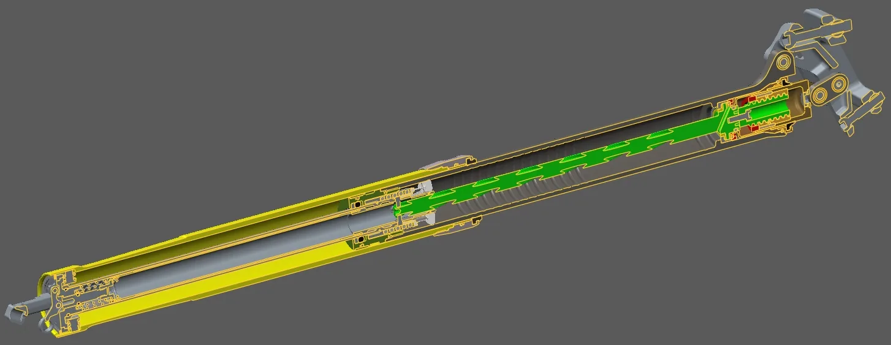
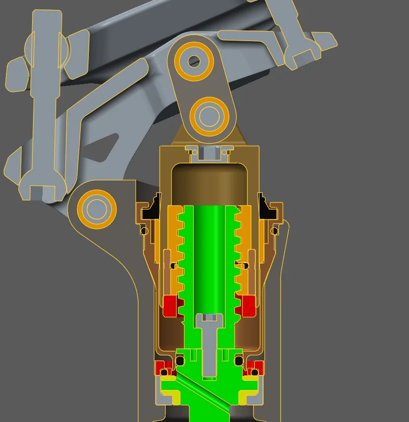
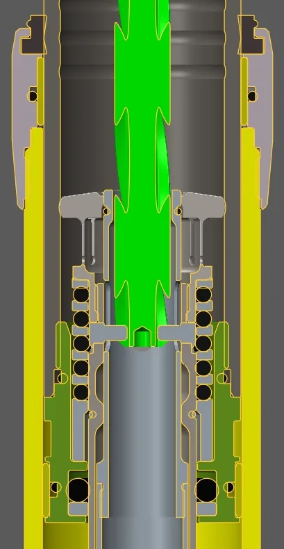
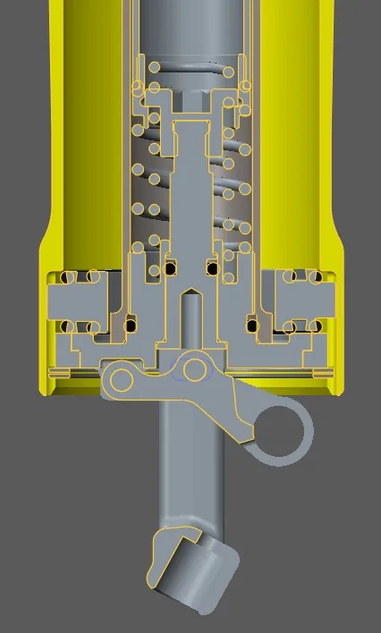
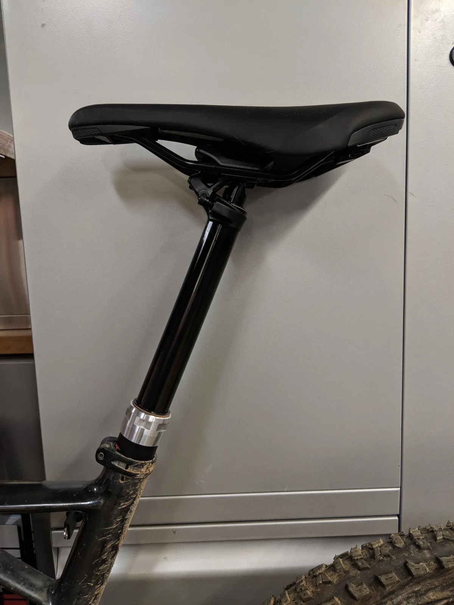
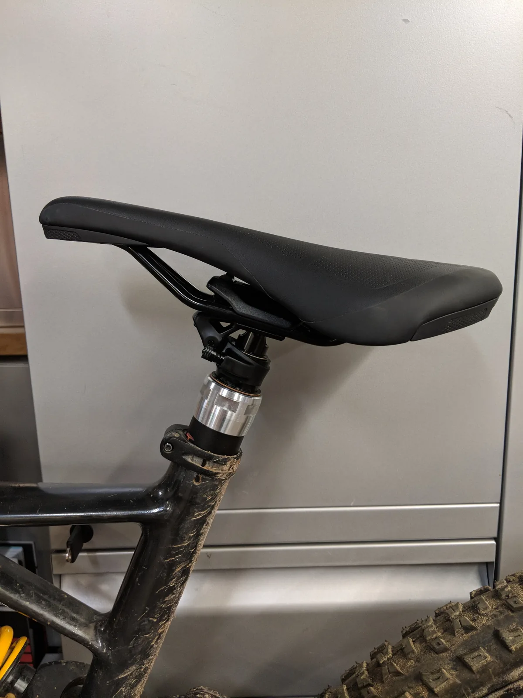